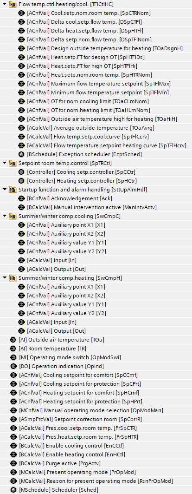
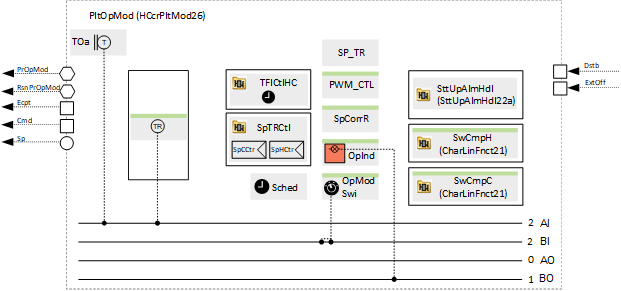
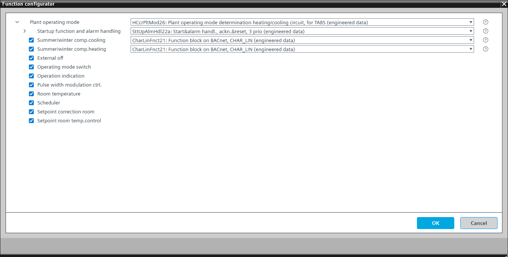

[HCcrPltMod26] Plant operating mode determination for heating/cooling circuit, for TABS
Program block, name / node subtype: [HCcrPltMod26] Plant operating mode determination for heating/cooling circuit, for TABS
Library hierarchy: Universal equipment
Family: HCcrPltMod
Project tree | Diagram |
|---|---|
 |  |
Configurator


Program blocks are stored in the library without I/Os. Use the auto-create and auto-connect functions to create I/Os and/or to connect them to the interface blocks, e.g., R_A, CMD_B. Alternatively, take the I/Os from the folder containing the predefined I/Os in the library and/or from the plant and connect them to the interface blocks.
Function
Determines the plant operating mode from multiple sources (e.g., scheduler, manual operation, room unit), establishes the heating or cooling state, and provides a flow temperature setpoint to a hydraulic circuit, and switches it on or off.
The program block is for plants with TABS for heating/cooling.
Possible operating modes
Operating mode | Description |
|---|---|
Protection | The hydraulic circuit is on and receives flow temperature setpoints for cooling or heating (the pump is on and the valve follows the output of the temperature controller). |
Comfort | The hydraulic circuit is on and receives corrected flow temperature setpoints for cooling or heating (the pump is on and the valve follows the output of the temperature controller). |
Off | The hydraulic circuit is off (the pump is off and the valve is closed). |
The operating mode is shown on BACnet with a multistate calculated value "Present operating mode" with the states "Protection", "Comfort", and "Off".
A parameter in the program is preset to prevent the plant from running. This is useful for testing data points. It must be switched off to start the plant.
"Startup function and alarm handling" controls the startup behavior of the plant after power-on. There is a delay after startup, "DlySttUp", of about 50 seconds. Do not change this delay. Change the delay "DlyOn" so that it is different for each plant. This ensures that plants start one after another and do not overload the electrical system. There is also a collection and aggregation of all faults and alarms from the plant. If a local alarm lamp and/or reset button is required, an alternative can be selected.
The flow temperature setpoint is calculated using a function block that determines room temperature setpoints (SP_TR).
Outside air temperature
The outside temperature [TOa] is used unfiltered and filtered. Two different attenuated signals result from the filtering.
Signal name | Description | Filter constant | Use |
|---|---|---|---|
TOa | Outside temperature | Unfiltered | N/A |
TOaEff | Effective outside air temperature | 1h |
|
Optional functions
This program block has the following optional functions:
Option: External off
Interface that can be connected to a program logic for shutting down the plant. It goes into Protection mode.
Option: Operating mode switch (1xMI=2xBI)
Reads the state of an operating mode switch, normally at the front of the electrical panel, and has the states "Auto", "Protection", and "Comfort".
Option: Operation indication (1xBO)
Commands a lamp (usually green) that turns on if the plant is running or that blinks if a switching operation is in progress.
Option: Pulse width modulation control
PWM_CTL calculates the flow temperature setpoint corrections for heating or cooling cycles, then controls the circulating pump accordingly. Operation cycle duration can be set to between 1 and 24 hours. For 24-hour cycles, the pump's switch-on time can be specified in the block configuration.
Option: Setpoint correction room
The setpoint reduction is defined by an analog configuration value that affects the comfort heating and cooling setpoints.
Option: Room temperature (1xAI)
Creates an analog input for the room temperature and reads its signal.
Option: Setpoint room temperature control
Controls the room temperature using a heating and cooling controller.
This option can only be applied successfully together with the optional room temperature.
Option: Summer/winter compensation heating
The comfort heating setpoint is adjusted based on the average outside air temperature over the past 24 hours.
Option: Summer/winter compensation cooling
The comfort cooling setpoint is adjusted based on the average outside air temperature over the past 24 hours.
Mandatory elements
Name | Description | Type | Alarm / Notification class | Trend / Type | |
|---|---|---|---|---|---|
OpModMan | Manual operating mode selection | MCnfVal: Multistate configuration value | N/A | Yes, 4 | |
PrOpMod | Present operating mode | MCalcVal: Multistate calculated value | No | Yes, 4 | |
RsnPrOpMod | Reason for present operating mode | MCalcVal: Multistate calculated value | No | Yes, 4 | |
Sched | Scheduler | MSchedule: Multistate scheduler | N/A | N/A | |
SttUpAlmHdl | Startup function and alarm handling | [SttUpAlmHdl22a] Startup & alarm handling, acknowledge & reset, 3 priorities | N/A | N/A | |
PrSpCTR | Present cooling setpoint room temperature | ACalcVal: Analog calculated value | No | Yes, 4 | |
PrSpHTR | Present heating setpoint room temperature | ACalcVal: Analog calculated value | No | Yes, 4 | |
EnCCtl | Enable cooling control | BCalcVal: Binary calculated value | No | No | |
EnHCtl | Enable heating control | BCalcVal: Binary calculated value | No | No | |
TFlCtlHC | Flow temperature control heating/cooling | N/A | N/A | N/A | |
TOa | Outside air temperature | AI: Analog input | No | Yes, 3 | |
SpHCmf | Heating setpoint for comfort | ACnfVal: Analog configuration value | N/A | Yes, 4 | |
SpCCmf | Cooling setpoint for comfort | ACnfVal: Analog configuration value | N/A | Yes, 4 | |
Optional elements
Name | Description | Type | Alarm / Notification class | Trend / Type | |
|---|---|---|---|---|---|
OpModSwi | Operating mode switch | MI: Multistate input | No | Yes, 4 | |
TR | Room temperature | AI: Analog input | No | Yes, 3 | |
Further elements that belong to this element: SpHPrt | Heating setpoint for protection | ACnfVal: Analog configuration value | No | Yes, 4 SpCPrt | Cooling setpoint for protection | ACnfVal: Analog configuration value | No | Yes, 4 | |||||
OpInd | Operation indication | BO: Binary output | No | No | |
SwCmpC | Summer/winter compensation for cooling | N/A | N/A | ||
SwCmpH | Summer/winter compensation for heating | N/A | N/A | ||
Further options
Description |
|---|
Setpoint room temperature control Elements that belong to this option: SpCCtr | Cooling setpoint controller | Ctr: Controller | N/A | N/A SpHCtr | Heating setpoint controller | Ctr: Controller | N/A | N/A |
Pulse width modulation control Elements that belong to this option: PrgActv | Heating setpoint for protection | BCalcVal: Binary calculated value | No | No |
Setpoint correction room Elements that belong to this option: SpCorrR | Setpoint correction room | ACnfVal: Analog configuration value | No | No |
External off |